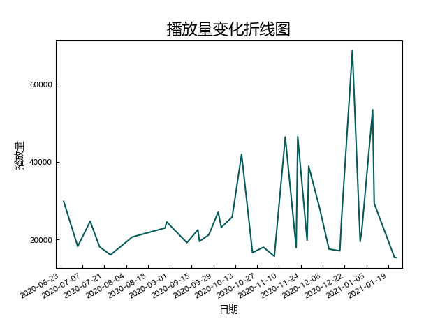

CLASS 4
4班(20200625-)

场次：
35（普通场：26）
平均播放量：
25886（所有公演），20759（普通公演）
中位播放量：
22140（所有公演），19492（普通公演）
标准差：
11995（所有公演），5017（普通公演）
播放量前三：
- 20年唐莉佳生诞(68579)
- 20年吴雨霏&吴思琪生诞(53377)
- 20年罗寒月&徐慧玲生诞(46425)
播放量变化分析：
相当稳定
高播放量公演推荐：
- 20年唐莉佳生诞：舞台好看，奶盖好zqsg，“101”画面过于搞笑
- 20年罗寒月&徐慧玲生诞：罗老师《相爱后动物感伤》好听，册子对罗密欧好zqsg，00的《囍》不错，祝前程似锦
- 20年方琪生诞：pv用的是时间轮回主题，拍的很好。比翼琪霏我磕爆
- 201129Waiting 4公演：比翼琪霏极限一换一刘蕾《夜蝶》
- 210110Waiting 4公演：最搞笑的抓鸭子
- 20年陈桂君&王翠菲生诞：农宣的信感人。两个人的努力和退让最终让这对cp到达了最理想的结果